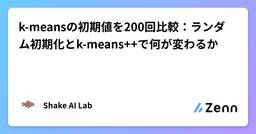
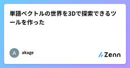
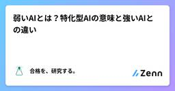

Zennの「機械学習」のフィード
フィード

欠損値のランダムサンプル補完 — 分布と分散を保つ単変量補完
Zennの「機械学習」のフィード
平均値や中央値で欠損を埋めると、すべての欠損が1つの代表値に置き換わります。その値の周辺にデータが人工的に集中するため、分散が縮小し、分布が不自然に歪んでしまいます。この問題を解決するのが「ランダムサンプル補完」です。その列の実際の値からランダムに選んで埋めるというシンプルな発想ながら、「元のデータ分布をそのまま保てる」という大きな利点があります。この記事では、その要点をコンパクトにまとめます。!題材は seaborn に組み込まれているタイタニック号の乗客データ（891行×15列）です。age 列は、欠損が177件、観測値が714件あります。 ランダムサンプル補完とは欠...
11時間前

Jevがポケモンをクリアした。でも裏にClaudeがいた──AIも「上司」と「現場担当」に分かれ始めた
Zennの「機械学習」のフィード
少し前に、JevというAIについて書きました。文章を生成するAIではなく、「この中ならどれ？」 を高速に判断するAIです。例えば、この問い合わせはA. 営業B. サポートC. 請求D. その他のどれ？みたいな判断。LLMに比べると、かなり地味です。文章を書いてくれるわけでもない。コードを書いてくれるわけでもない。人生相談にも乗ってくれない。選ぶ。判断する。点数を付ける。だいたいそれだけ。前の記事では、毎回LLMに部長会議を開かせなくてもいいのでは。という話を書きました。https://zenn.dev/yuruconsa/articles/...
14時間前
PCAの累積寄与率80%で十分？ 分散と分類性能が一致しないデータを作って検証する
Zennの「機械学習」のフィード
主成分分析(PCA)をかけたあと、必ず決めなければならないことがある。何本残すかだ。定番の答えは決まっている。累積寄与率が80%(あるいは90%)を超えるところまで残す。私もそうしてきた。3行で書けるし、根拠を聞かれても「元の情報の8割を保っています」と言える。引っかかっていたのは、寄与率が「何の」8割なのかだ。実測したら、寄与率88.57%の成分に分類の手がかりが1つも入っておらず、捨てられる寄与率1.88%の成分だけで精度0.95が出た。実験に使ったコードの全文はGitHubに置いています。!評価手順についての補足：以下の図表は、標準化とPCAを全データにfitして...
16時間前
Claude Codeと作る競馬予測システム開発記(8) オーバーレイ探索編
Zennの「機械学習」のフィード
はじめに前回は、オッズの時系列データを使って市場の動きを観測する取り組みについて書きました。第8回となる今回は、そもそも「勝てる馬券」とは何なのか、という根本に戻って「オーバーレイ」という考え方と、ここまでの検証を踏まえた現実的な探索の落とし所について書きます。 オーバーレイとはオーバーレイとは、期待値が1を超えている状態、つまり「実力に対して市場から過小評価されている（オッズが甘い）馬」のことです。競馬は参加者同士の賭け合いなので、強い馬を当てるだけでは勝てません。どれだけ強い馬でも、全員が強いと分かっていればオッズは低くなり、的中しても元が取れないからです。勝つために...
17時間前

手を動かして学ぶ LLMファインチューニングとモデル最適化 ― SFT・LoRA・DPO・量子化・蒸留をCPUだけで一巡させる
Zennの「機械学習」のフィード
>本教材は、プロンプトと RAG では届かない要求（出力形式を厳密に守らせる、専門用語の言い回しを揃える、小さく安く速いモデルで済ませる）に対して、モデル自体を学習・軽量化して応える力を身につけるための実践教材です。GPU は不要です。すべての演習を CPU の Docker 環境で完走できるよう、1億3千万パラメータ級の小型モデルと数百件のデータで設計してあります。「GPU が無いから学習は試せない」で止まっていた方が、SFT・LoRA・DPO・量子化・蒸留の一巡を自分の手で回し、実務でどこに投資すべきかを判断できるようになることを目的としています。>プロンプト・RAG・ファインチューニングの判断表を自分で書けるようになり、SFT データの設計（収集・重複除去・汚染対策・chat template・ライセンス）とトークナイザの扱い（loss マスクでプロンプト部を学習させない）を実装できるようになります。フル微調整と LoRA を同じ題材で比較し、rank・alpha・target_modules の効き方とメモリ削減を実測できるようになります。学習が失敗したときの診断（loss が下がらない・NaN・学習率・勾配累積・シード再現性）、DPO による選好学習とペアデータ作成、学習後の回帰（忘却）の検出、int8/int4 量子化の原理と GGUF 変換・ONNX Runtime での量子化、蒸留による小型化、プルーニングや MoE の位置づけ、実験管理とモデルカードによる再現性の担保、そしてサービングを見据えた学習側の設計まで、モデルを預かる立場で判断できる状態を目指します。
1日前
個人開発の天気アプリで「深夜なのに光化学スモッグ警戒」が出た話 — 確率の根拠を全部見せるようにするまで
Zennの「機械学習」のフィード
これは何の記事か「もしも天気」という個人開発の天気アプリで、独自の「もしも注意情報」(大雨継続・光化学スモッグ・霧など11種類のイベントを、過去の類似日パターン照合＋実況ルールで確率化して出す機能)を運用していたところ、明らかにおかしい数字が何度か出ました。深夜0時台なのに「光化学スモッグ 警戒(19%)」全国180地点中、離れた22地点が寸分違わず「霧 注意(22%)」で揃う投票企画「雨が降る地点数予想」の答え合わせが「実際は0地点」これを1つずつ、実際のデータをD1コンソールで確認しながら潰していった記録です。「確率だけ見せればいい指標」と「実測値の根拠まで見せた方...
1日前

機械学習に学ぶプログラマーの生存戦略 ― テキスト勾配でアプリ開発を「学習」として読み解く
Zennの「機械学習」のフィード
図表1 テック文化祭2026 by Findy Studentで話したスライドの表紙2026年9月26日、「テック文化祭2026 by Findy Student」において、「機械学習に学ぶ プログラマーの生存戦略」と題して登壇した。本稿はその解説である。当日の5分では語り尽くせなかった〝テキスト勾配〟（textual gradient）という考え方について、スライドと解説アニメーションのコマを用いながら、順を追って述べていく。先に結論を書いておこう。!ニューラルネットの学習（勾配降下法）と、LLMによるコード修正は、まったく同じ形のループを回しているそのループは新規開発に...
1日前
「未来のカンニング」を構造で防ぐ：上書きされるメモを学習に使う前に、AIへ「突き合わせ」を頼んだ話
Zennの「機械学習」のフィード
バックテストの成績が良すぎるとき、まず疑うのは「過去のデータに、未来の情報が混ざっていないか」です。しかもこの種の間違いは、エラーになりません。コードは普通に動き、検証の成績はむしろ良くなります。日本株のAI銘柄スクリーニング＆継続学習端末「ALPHA FORGE（アルファフォージ）」を、Claude Code と二人三脚で個人開発しています。今回は、まだ起きていない事故を、設計の段階で見つけて防いだ話です。きっかけは「ニュースや財務の情報も学習に入れたい」という依頼に、「作って」ではなく「実装との突き合わせ」を頼んだことでした。!【要約：この記事で伝えたいこと】学習にニュース...
1日前

lossが下がるほど壊れていく ― Week3 第3回:mask削除と過学習
Zennの「機械学習」のフィード
はじめに前回は、3つの壊し方がすべて同じ場所(ユニグラム水準の3.3)で停滞し、曲線では区別できないことを見た。切り分けには、データの目視と層別の勾配ノルムという2つの道具があった。今回は残り2つである。前回とは症状が逆になる。壊し方何が起きるか#6 データを2,000文字に限定trainは下がるがvalが上がる#3 causal mask削除train も val も下がり続ける#6は教科書的な過学習で、valを見ていれば気づける。問題は#3である。数値に一切の異常が出ない。 しかも325 iterのあいだ、基準と完全に同じ曲線を描く。先...
2日前

ループエンジニアリングには2種類ある —— 直すループと、育つループ
Zennの「機械学習」のフィード
AIエージェントにプロンプトを1回ずつ打つのではなく、ループを回させる。テストを走らせ、落ちたら直し、また走らせる。2026年に入って、この設計は「ループエンジニアリング」という呼び名で一気に広まった。実際に回してみると、うまくいく場面とそうでない場面がはっきり分かれる。テストを通す、型エラーを潰す、lintの指摘を直す。こういう仕事では、ループは驚くほどよく働く。一方で「もっと良い設計はないか」「もっと面白い案はないか」と探らせ続けると、数周目から同じ案の言い換えばかりが返ってくるようになる。この差は、ループの出来の良し悪しというより、別の種類のループを同じ名前で呼んでいることから...
2日前

k-meansの初期値を200回比較：ランダム初期化とk-means++で何が変わるか
Zennの「機械学習」のフィード
k-meansは「初期値に弱い」とよく言われる。ランダムに置いた初期セントロイドが悪い位置からスタートすると、そのまま悪い局所最適解に収束して抜け出せなくなる、という話だ。焼きなまし法の記事で見た「開始点が終着点を決めてしまう」問題と同じ構図だし、絡まった2リングの記事で見た「k-meansは距離でしか物を見られない」という弱点とも地続きの話だと思う。ただ、この「初期値に弱い」という話、どのくらい弱いのかを自分の目で確かめたことはなかった。教科書的な結論をそのまま信じるのではなく、実際にk-meansが引っかかりやすいデータを自分で設計し、ランダム初期化とk-means++初期化を何百...
2日前

TORCSのレースAIを122秒から106秒台へ：区間ごとの切り替え、衝突区間の特定、補正ネットワーク
Zennの「機械学習」のフィード
122秒で頭打ちになったレースAIのタイムを、最後に大きく縮めたのは、コースの1か所にだけ置いた「時速71.4kmまで」という上限でした。その区間で起きていた衝突は、コースのデータと衝突した地点を突き合わせるだけで場所が特定できました。前の記事では、レースシミュレータ TORCS のAIで強化学習（SAC）をやめ、単純な制御の規則の定数をCMA-ESで調整する方法に切り替えて、261秒から122秒まで縮めるところを書きました。この記事では、そこから106.63秒までの約16秒を書きます。この記事で分かることは次の4つです。1組の定数で1周すべてをまかなうのをやめ、区間ごとに走り...
2日前

TORCSのレースAIで強化学習をやめ、CMA-ESに切り替えた判断と設計
Zennの「機械学習」のフィード
6人のチームで、強化学習をやめたのは私だけでした。イギリスの大学に交換留学していた2026年の春、IBMがクライアントの授業で、レースシミュレータ TORCS を走るAIを作りました。チームの主軸は深層強化学習（SAC）でした。私は先に一人でSACを試していましたが、3月中旬から4月下旬まで試しても、車は1周を走りきれませんでした。そこで私は強化学習をやめ、すでに1周走れる単純な制御の規則の定数を、CMA-ESというブラックボックス最適化で調整する方法に切り替えました。支給されたベースラインの261.42秒から、切り替えて5日で122秒台、約2週間で106.63秒です。この記事で...
2日前

単語ベクトルの世界を3Dで探索できるツールを作った
Zennの「機械学習」のフィード
きっかけ去年、YouTubeを何気なく見ていたときに、3Blue1Brownの「Transformerの仕組み」の動画に出会いました。https://youtu.be/wjZofJX0v4Mその中で、LLMが言葉の意味を、一見ランダムに見える数字の並び（ベクトル）で表現していることが説明されていました。特に印象に残ったのが、「queen − king ≈ woman − man」という例です。「王」から「女王」への向きと、「男」から「女」への向きがほぼ同じになる。ただの数字の集まりなのに、ちゃんと意味の関係が入っているんです。正直、かなり衝撃でした。 他にはどんな関係が...
2日前

命題レベル・アテンションと人間による命題精錬を備えた論理IDEの構想
Zennの「機械学習」のフィード
この記事についてLLMに論理推論をさせると、それらしいが途中で飛躍した答えが返ってくることがある。逆に昔ながらの記号的AIは厳密だが、「患者」と「対象者」が同じものだと教えるだけでも一苦労だった。この記事は、その中間を狙う一つの設計を考える。推論を「命題グラフ上の遷移」として表し、どの前提を使うかの 選択 はLLMとアテンションに任せ、規則の 適用 は従来のアルゴリズムで厳密に行う。合言葉は「演繹は確率付きでも厳密に、一致不一致はアバウトに」である。道具立ては三つある。命題を単位にしたアテンションで前提を選ぶこと。複数の推論パスを並行して伸ばし、見込みの薄い枝を捨てること。そして...
2日前

[深層強化学習] Rust製ReinforceXをPythonから使う — FFI・並列学習・RNDの実装
Zennの「機械学習」のフィード
はじめに個人開発しているRust製の強化学習フレームワーク、ReinforceXにPythonから学習させるためのFFIを整備したので、今回はその設計と実際に学習させてみた結果を紹介します。前回の記事では、RustからGymnasiumを呼び出してDQNを動かしました。今回は呼び出す向きを逆にして、環境はPython、エージェントの学習処理はRustに置いています。これにより、Gymnasiumの環境やPythonで書いた独自環境を使いながら、Rust側のエージェント、Replay Buffer、好奇心モジュールを組み合わせられるようになりました。特に面白いと思っているのが、P...
2日前

「9月なのにホワイトアウト99%」を追いかけたら、直すべき場所が4層あった
Zennの「機械学習」のフィード
この記事について個人開発している天気予報アプリ「もしも天気」(Cloudflare Workers + D1)で、9月なのに「ホワイトアウト・地吹雪」が全国ほぼ100%で表示され続けるというバグに遭遇した。原因を1つ直しても直しても別の層から同じ症状が再発し、最終的に4層を順番に剥がしてようやく収まった。同じ構造のバグが「霧」でも見つかったので、あわせて記録しておく。 アプリの仕組み(前提)もしも天気の「注意情報」(独自のイベント予測、雷雨・大雨継続・ホワイトアウトなど11種類)は、大きく2つの経路で確率が決まる。パターン照合: 過去4年・全国180地点の実績データか...
2日前

違うバグが同じ曲線を描く ― Week3 第2回:学習率・データ・構造
Zennの「機械学習」のフィード
はじめに前回は、壊す前に「正常とは何か」を数値で定義した。4つの物差しを用意し、基準となるモデルを固定した。 4.174 ln(V) 何も知らない 3.30 ユニグラム 文字の頻度のみ覚えた 2.24 基準の到達点 文脈依存の規則を学んでいる今回から実際に壊す。扱うのは3つである。壊し方何を変えるか#1 学習率過大lr を100倍・1000倍#2 targetsシャッフル正解ラベルの対応を壊す#5 residual削除x + attn(...) を x = attn(...) にこの3つ、最終...
3日前

学習が「うまくいっている」とは何か ― Week3 第1回:4つの物差し
Zennの「機械学習」のフィード
はじめに前回、自作のTransformer(GPTMini)をtiny_shakespeareで学習させ、val lossを1.83まで下げた。動くものはできた。ただ、こんな疑問が残った。もしどこかにバグがあったとして、私はそれに気づけるのか。lossが下がっていれば正常と判断していいのか。下がらなかったとき、原因をどう絞り込むのか。前回うまくいったのは「たまたま間違えなかった」だけかもしれない。そこで今回はわざと壊すことにした。6種類のバグを意図的に仕込み、それぞれがどんな症状として現れるかを記録する。症状から原因を逆引きできる表を作るのが目的である。結果を先に書く。6つ...
3日前

弱いAIとは？特化型AIの意味と強いAIとの違い
Zennの「機械学習」のフィード
「弱いAI」という言葉は、生成AIパスポート試験で扱われるAIの基礎概念のひとつです。現在私たちが日常的に触れているAIの多くは、この「弱いAI」に分類されます。本記事では、定義・位置づけ・関連用語との違いを整理します。 弱いAIとは弱いAI（よわいえーあい）とは、特定タスクに特化したAIを指します。画像認識、翻訳、将棋AIなど、限定された問題領域においては人間並み、あるいは人間を超える性能を発揮することがあります。一方で、その領域を越えた汎用的な思考はできません。ポイントは「得意分野が限定されている」という点です。たとえば将棋AIは将棋には強くても、そのまま翻訳ができるわけでは...
3日前